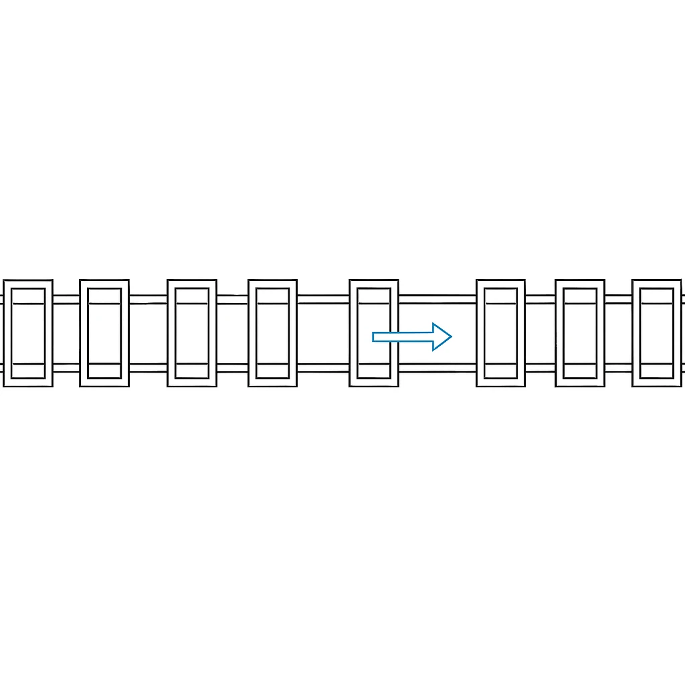

Industry Maps for Sortation & Automation
Your map of global sorter & conveyor systems — seen strictly from geometry. Not who builds the machine, but where each system starts drifting, losing preload, and letting the axis slide off truth under vibration.

Top Cross-Belt Sorter Manufacturers in Europe
Europe’s cross-belt ecosystem seen through transverse vibration, carrier-tilt initiation, drift-path migration, and preload decay under high-cycle motion.
View the Full Map →Explore OEM Categories
Cross-Belt Sorters
Europe’s cross-belt OEMs mapped through transverse vibration behavior, drift-path migration, and preload decay patterns.
View the Map →Shoe Sorters
Global shoe-sorter systems analyzed through carrier misalignment, slider-rail wear, and tilt propagation under vibration.
View the Map →Telescopic Conveyors
North America’s telescopic conveyor OEMs mapped from hinge drift, boom skew, and clamp-length instability under shock loads.
View the Map →Parcel Handling Integrators (USA)
System-level parcel integrators evaluated by bracket drift, preload decay across long runs, and misalignment propagation.
View the Map →Conveyor OEMs (Germany)
Support-geometry drift, tolerance stack-up, and thermal migration behavior across Germany’s conveyor OEM ecosystem.
View the Map →Industry Maps Library
Explore all 20+ structural-pathology maps across sorters, conveyors, integrators, and automation OEMs.
View All Maps →